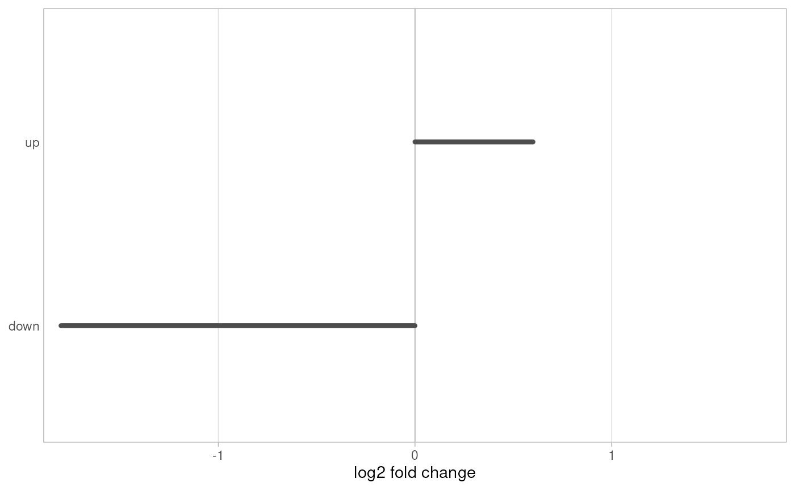

Plot a per-transcript fold change for the transcripts of splicelogic events
Source:R/plot_events.R
plot_transcript_lfc.RdDraws one diverging bar per transcript appearing in tx_id or
event_tx_id of events: left of zero for a negative value and right for
a positive one. It is the companion to plot_transcripts(): given the same
events the two plots share their row order and y limits, so they line up
when placed side by side, e.g. with patchwork.
Usage
plot_transcript_lfc(
events,
tx_lfc,
title = NULL,
lfc_max = NULL,
lfc_label = "log2 fold change",
lfc_ends = NULL,
bar_color = "grey30",
transcript_label = FALSE
)Arguments
- events
A GRanges returned by
find_all_events()or anyfind_*()function.- tx_lfc
Numeric vector named by transcript id, e.g. a log2 fold change from a differential expression analysis. Transcripts not named in it keep their row but get no bar.
- title
Plot title. Default
NULL.- lfc_max
Half-width of the x axis.
NULL(default) uses the largest absolute value in the plot; pass a number to make plots comparable. Values beyond it are clipped at the axis edge.- lfc_label
x-axis title.
- lfc_ends
Optional length-2 character vector naming the negative and positive ends of the axis, e.g.
c("KD", "WT")for alog2(WT/KD). DefaultNULLdraws no end labels.- bar_color
Colour of the bars. Default
"grey30".- transcript_label
Whether to print the transcript ids on the y axis, for use on its own. Default
FALSE, asplot_transcripts()already labels the rows.
Examples
exons <- data.frame(
seqnames = "chr1",
start = c(1, 201, 401, 1, 401),
end = c(100, 300, 500, 100, 500),
strand = "+",
gene_id = "g1",
tx_id = c("down", "down", "down", "up", "up"),
exon_rank = c(1, 2, 3, 1, 2),
estimate = c(-1, -1, -1, 1, 1)
) |>
plyranges::as_granges() |>
preprocess(coef_col = "estimate")
events <- find_all_events(exons, verbose = FALSE)
tx_lfc <- c(down = -1.8, up = 0.6)
if (requireNamespace("ggplot2", quietly = TRUE)) {
plot_transcript_lfc(events, tx_lfc, transcript_label = TRUE)
}
